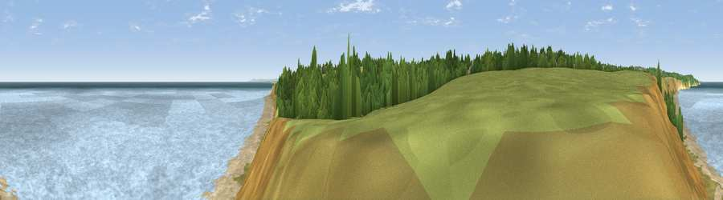

Viewpoint near Horden
#12213 in England · top 28% of its area beats it · near HordenWhere it is
The exact computed spot (NZ 45375 40975). Click the marker for map links.
The view, rendered

A 360° render of this exact spot computed from the terrain model, tree cover and land cover — summer colours, afternoon light, calibrated against photographs of famous viewpoints. Real trees, hedges and buildings will differ in detail.
The panorama
Grey silhouette: terrain skyline in each direction (720 bearings, Earth curvature and refraction included). Dashed green: skyline with trees (+15 m) and buildings (+8 m) as obstacles. Blue strip: how far the ground is visible on each bearing.
Where the view opens
Wedge length = distance to the farthest visible ground on that bearing (vegetation-aware). Rings at 10, 25 and 50 km.
What fills the view
64% water · 14% grassland · 12% bare ground · 6% woodland · 2% cropland · 1% built-up
Angular shares of the visible panorama (visual magnitude), not map area. Landscape diversity 0.49 (0–1 Shannon).
Key numbers
More beautiful places nearby
The staircase of upgrades: each row has a higher view potential than everything closer. Driving times are estimates from straight-line distance, calibrated against real road routing — check an actual route before setting out.
| Place | Direction | Drive | Score |
|---|---|---|---|
| Viewpoint near Horden | NNW · 1 km | ~3 min | 64.0 |
| Viewpoint near Easington Colliery | NW · 3 km | ~8 min | 69.4 |
| Viewpoint near Easington Colliery | NNW · 5 km | ~10 min | 74.4 |
| Viewpoint near Houghton-le-Spring | NW · 12 km | ~23 min | 76.0 |
| Viewpoint near Lazenby | SSE · 25 km | ~41 min | 86.4 |
| Warsett Hill | SE · 31 km | ~48 min | 86.8 |
| Viewpoint near Easington | SE · 36 km | ~54 min | 90.2 |
| The Knoll | SSW · 462 km | ~430 min | 91.0 |
54.76167, -1.29638 · source: screening · position refined by local search. Computed location — check access rights before visiting.